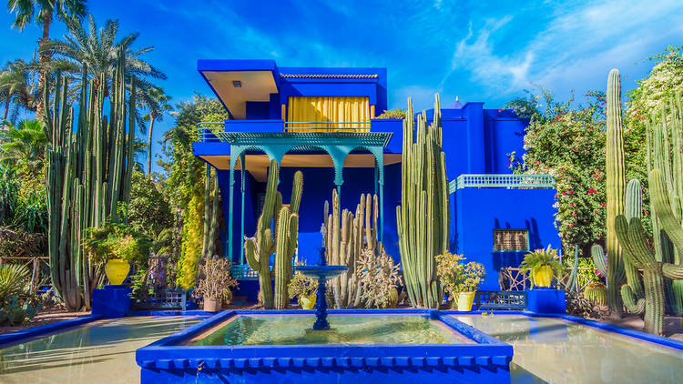

Discover Venice, a city of romance, where each canal holds a secret and every sunset promises a dream. Experience serenades, ancient bridges, and an unparalleled romantic allure.
Bali - Island of the Gods
Lose yourself in the serene landscapes of Bali, where spirituality meets nature. From mystical temples to undulating rice terraces, Bali beckons the soul and soothes the heart.
Mystique of Marrakech

Step into Marrakech, the red city where tradition dances with the present. Traverse bustling souks, get enchanted by fragrant gardens, and feel the touch of history.
Wonders of Kyoto
Travel back to ancient Japan with Kyoto, where traditions come alive. Watch cherry blossoms frame historic temples and let traditional tea ceremonies transport you to another era.